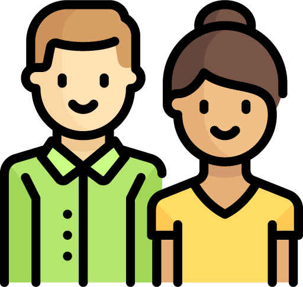

Insights

Forgetfulness
Through research, we found that “forgetfulness” is one of the most common reasons for not using reusable mugs. Most of our interviewees have reusable mugs; however, they often leave them at home and have to use disposable cups.
Community Engagement
When an action addresses a meaningful issue and requires group efforts, users are more inclined to engage people around them to participate or respond to the invitations from other people.

Social Norms
Social norms play a major influence on users’ behavior. Users are more likely to adopt a behavior if they see their families/friends taking action or encouraging them to do so.
Incentives
Seeing the progress they made, through data visualization and measurement of spared resources, encourages the user to continue the behavior.